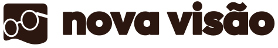
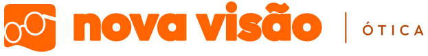
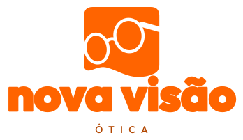
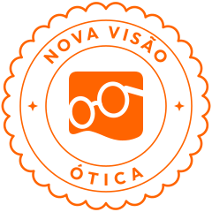

Horizontal

Horizontal em fundo escuro

Sobre laranja ou foto

Uma cor (café)
Todas são a Original refinada. Muda só o formato, a cor de fundo e o tamanho, conforme a aplicação.
Uso: site, papelaria, embalagem, fachada em fundo claro.

Uso: letreiro, assinatura de e-mail, material institucional onde 'ótica' precisa aparecer.



Uso: sacola, embalagem, cartaz, espaços mais altos que largos.




Uso: onde o nome já aparece ou não cabe: selos, tags, bordado, gravação, estojo.


Uso: faixas, rodapés, produtos onde o símbolo já está em outro lugar.
Uso: redes sociais, ícone de app, aba do navegador.

Uso: adesivo, lacre de embalagem, carimbo, flanela.
